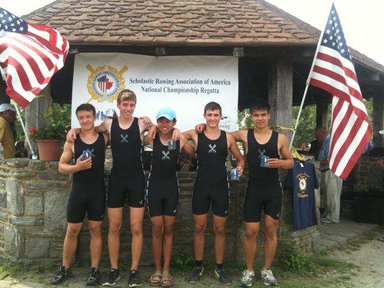

About Me
HighSchool:
Outside of school work I enjoyed rowing, competing on the national level in both the US and Canada, and fishing, a hobby of mine since elementary school.


College:
As a high schooler I discovered that I liked chemistry, although I didn’t know much about it at the time (as exemplified by this final project video). When I took organic chemistry in college, I found a topic that fascinated me. I was fortunate to have the opportunity to work in the synthetic organic chemistry lab of Professor Scott Snyder. I never looked back, working in lab alongside Dr. Hyung Min Chi and graduate student Pengfei Hu for ~40 hours a week during the school year, and much more in the summer.

Aside from chemistry and classes, I was a dedicated ultimate frisbee player. The team was a close-knit group, and I enjoyed competing alongside my friends.

Present:
I applied to graduate school to pursue a PhD in organic chemistry, and I was accepted into some great top ten programs. But, for various reasons, mostly the hazards of lab work, I chose not to attend.
I had never written a line of code before July of 2018, yet CS was appealing to me because of the opportunities it would make available -- going back to school in pursuit of an M.S. or PhD in computational chemistry/biology remains very much on my mind. Over time, I actually found that I quite enjoyed CS as a logic-based discipline, whose problem solving nature resonated with what had originally attracted me to organic chemistry.
From July of 2018 to February of 2019, I lived at my local library and did nothing but study and code, except on the weekends when I worked at a coffee shop for a change of scenery. I learned to code in Python, C++, and Javascript, to use Bash, Kivy Language, HTML, PHP, SQL, and CSS, and about the theoretical side of CS - algorithms, data structures, object-oriented programming, big-O runtimes, how data is stored/accessed, etc. I tested my understanding by creating projects, working through questions in textbooks, and completing online challenges. In March of 2019 I started working for Neaton Mathematics, where I develop education software.